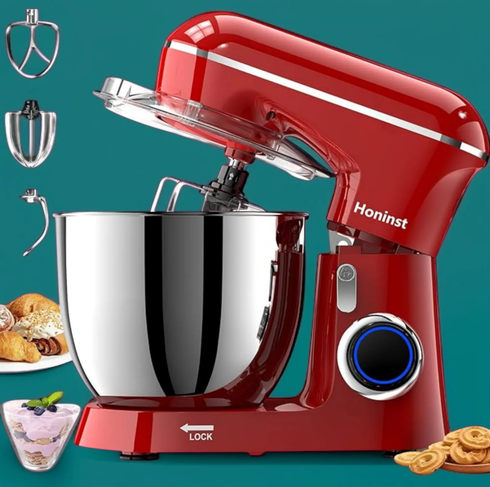

Stand Mixer 6.5QT – 10-Speed Tilt-Head, 3-in-1 Baking Mixer with Bowl & Attachments (Red)

This multifunctional stand mixer is a powerful kitchen companion for baking enthusiasts. With 10 speed levels and 3 versatile attachments, it handles everything from dough to whipped cream.
Key Features
- 6.5-quart large stainless steel bowl
- 10-speed control with tilt-head design
- Comes with dough hook, whisk, and beater
- Ideal for baking, mixing cakes, and daily kitchen use
Advantages
- Powerful motor for smooth mixing
- Easy to use and clean
- Stylish red finish fits modern kitchens
- Perfect for beginners and home bakers
Disadvantages
- May be noisy at higher speeds
- Requires counter space due to size